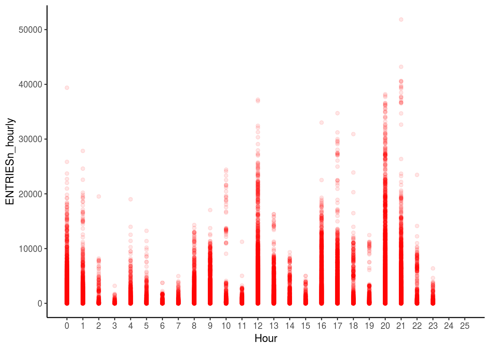

Regression is a statistical technique to analyze the relationship between a response variable and one or more predictors. If the relationship is linear, a straight line can be fit to the data using the following equation- y = mx + c Here, y is the outcome variable, m is the gradient or slope of the line, x is the predictor variable and c is the intercept on the line.
For example, studing the relationship between size of a house in square feet and its price. Linear modelling helps in predicting the price of a house based on the size. Thus, the above equation can be written as- price = m * size + intercept
Implementation
Dataset: Turnstile Data of NYC Subway
df_turnstile <- read.csv("turnstile_data_master_with_weather.csv")
head(df_turnstile) X UNIT DATEn TIMEn Hour DESCn ENTRIESn_hourly EXITSn_hourly
1 0 R001 2011-05-01 01:00:00 1 REGULAR 0 0
2 1 R001 2011-05-01 05:00:00 5 REGULAR 217 553
3 2 R001 2011-05-01 09:00:00 9 REGULAR 890 1262
4 3 R001 2011-05-01 13:00:00 13 REGULAR 2451 3708
5 4 R001 2011-05-01 17:00:00 17 REGULAR 4400 2501
6 5 R001 2011-05-01 21:00:00 21 REGULAR 3372 2122
maxpressurei maxdewpti mindewpti minpressurei meandewpti meanpressurei
1 30.31 42 35 30.23 39 30.27
2 30.31 42 35 30.23 39 30.27
3 30.31 42 35 30.23 39 30.27
4 30.31 42 35 30.23 39 30.27
5 30.31 42 35 30.23 39 30.27
6 30.31 42 35 30.23 39 30.27
fog rain meanwindspdi mintempi meantempi maxtempi precipi thunder
1 0 0 5 50 60 69 0 0
2 0 0 5 50 60 69 0 0
3 0 0 5 50 60 69 0 0
4 0 0 5 50 60 69 0 0
5 0 0 5 50 60 69 0 0
6 0 0 5 50 60 69 0 0str(df_turnstile)## 'data.frame': 131951 obs. of 22 variables:
## $ X : int 0 1 2 3 4 5 6 7 8 9 ...
## $ UNIT : Factor w/ 465 levels "R001","R002",..: 1 1 1 1 1 1 2 2 2 2 ...
## $ DATEn : Factor w/ 30 levels "2011-05-01","2011-05-02",..: 1 1 1 1 1 1 1 1 1 1 ...
## $ TIMEn : Factor w/ 32261 levels "00:00:00","00:00:03",..: 1253 6369 11995 17547 23222 28407 1253 6369 11995 17547 ...
## $ Hour : int 1 5 9 13 17 21 1 5 9 13 ...
## $ DESCn : Factor w/ 1 level "REGULAR": 1 1 1 1 1 1 1 1 1 1 ...
## $ ENTRIESn_hourly: num 0 217 890 2451 4400 ...
## $ EXITSn_hourly : num 0 553 1262 3708 2501 ...
## $ maxpressurei : num 30.3 30.3 30.3 30.3 30.3 ...
## $ maxdewpti : num 42 42 42 42 42 42 42 42 42 42 ...
## $ mindewpti : num 35 35 35 35 35 35 35 35 35 35 ...
## $ minpressurei : num 30.2 30.2 30.2 30.2 30.2 ...
## $ meandewpti : num 39 39 39 39 39 39 39 39 39 39 ...
## $ meanpressurei : num 30.3 30.3 30.3 30.3 30.3 ...
## $ fog : num 0 0 0 0 0 0 0 0 0 0 ...
## $ rain : num 0 0 0 0 0 0 0 0 0 0 ...
## $ meanwindspdi : num 5 5 5 5 5 5 5 5 5 5 ...
## $ mintempi : num 50 50 50 50 50 50 50 50 50 50 ...
## $ meantempi : num 60 60 60 60 60 60 60 60 60 60 ...
## $ maxtempi : num 69 69 69 69 69 69 69 69 69 69 ...
## $ precipi : num 0 0 0 0 0 0 0 0 0 0 ...
## $ thunder : num 0 0 0 0 0 0 0 0 0 0 ...summary(df_turnstile)## X UNIT DATEn TIMEn
## Min. : 0 R549 :12198 2011-05-05: 4510 00:00:00: 7144
## 1st Qu.: 32988 R550 : 6881 2011-05-12: 4503 04:00:00: 7141
## Median : 65975 R541 : 5922 2011-05-19: 4503 20:00:00: 7112
## Mean : 65975 R540 : 4420 2011-05-16: 4493 12:00:00: 7105
## 3rd Qu.: 98962 R543 : 4146 2011-05-23: 4479 16:00:00: 7067
## Max. :131950 R552 : 3509 2011-05-26: 4479 09:00:00: 6087
## (Other):94875 (Other) :104984 (Other) :90295
## Hour DESCn ENTRIESn_hourly EXITSn_hourly
## Min. : 0.0 REGULAR:131951 Min. : 0 Min. : 0.0
## 1st Qu.: 5.0 1st Qu.: 39 1st Qu.: 32.0
## Median :12.0 Median : 279 Median : 232.0
## Mean :10.9 Mean : 1095 Mean : 886.9
## 3rd Qu.:17.0 3rd Qu.: 1109 3rd Qu.: 847.0
## Max. :23.0 Max. :51839 Max. :45249.0
##
## maxpressurei maxdewpti mindewpti minpressurei
## Min. :29.74 Min. :39.00 Min. :22.00 Min. :29.54
## 1st Qu.:29.96 1st Qu.:50.00 1st Qu.:38.00 1st Qu.:29.84
## Median :30.03 Median :57.00 Median :51.00 Median :29.91
## Mean :30.03 Mean :57.24 Mean :48.26 Mean :29.89
## 3rd Qu.:30.10 3rd Qu.:64.00 3rd Qu.:55.00 3rd Qu.:29.97
## Max. :30.31 Max. :70.00 Max. :66.00 Max. :30.23
##
## meandewpti meanpressurei fog rain
## Min. :31.0 Min. :29.64 Min. :0.0000 Min. :0.0000
## 1st Qu.:45.0 1st Qu.:29.91 1st Qu.:0.0000 1st Qu.:0.0000
## Median :54.0 Median :29.96 Median :0.0000 Median :0.0000
## Mean :52.7 Mean :29.97 Mean :0.1671 Mean :0.3342
## 3rd Qu.:60.0 3rd Qu.:30.05 3rd Qu.:0.0000 3rd Qu.:1.0000
## Max. :68.0 Max. :30.27 Max. :1.0000 Max. :1.0000
##
## meanwindspdi mintempi meantempi maxtempi
## Min. : 1.000 Min. :46.00 Min. :55.00 Min. :58.00
## 1st Qu.: 5.000 1st Qu.:52.00 1st Qu.:60.00 1st Qu.:65.00
## Median : 5.000 Median :54.00 Median :63.00 Median :71.00
## Mean : 5.543 Mean :56.17 Mean :64.27 Mean :71.77
## 3rd Qu.: 6.000 3rd Qu.:60.00 3rd Qu.:68.00 3rd Qu.:78.00
## Max. :12.000 Max. :70.00 Max. :78.00 Max. :86.00
##
## precipi thunder
## Min. :0.0000 Min. :0
## 1st Qu.:0.0000 1st Qu.:0
## Median :0.0000 Median :0
## Mean :0.1723 Mean :0
## 3rd Qu.:0.1000 3rd Qu.:0
## Max. :2.1800 Max. :0
## The aim is to predict Entriesn_hourly i.e. number of hourly entries at the NYC Subway based on other predictor variables.
Some of the predictor variables are not of any use; X is the row number which won’t be useful in analysis.
DESCn only has one value in the entire dataset and can be omitted.
df_turnstile$X <- NULL
df_turnstile$DESCn <- NULLExploratory Data Analysis:
Scatterplots are a good way of understand the linear relationship between two variables. Following is a scatterplot between the Hour of the day and the number of entries, colored by whether there was rain or not.
ggplot(df_turnstile, aes(x = as.Date(DATEn), y = ENTRIESn_hourly)) + geom_point() + scale_x_date(breaks = seq(as.Date("2011-05-01"), as.Date("2011-05-30"), by = "1 day"),labels=date_format("%d")) +
theme_classic()This first graph shows the distribution of the number of entries over the month of May 2011. The distribution shows 5 days of high entries and 2 days where it is comparitively less; explaining the weekdays and weekend entries.
Studying the number of turnstile entries based on the Hour of the day.
ggplot(df_turnstile, aes(x = Hour, y = ENTRIESn_hourly)) + geom_point(color = "red", alpha = 0.1) + scale_x_continuous(limits = c(0,25), breaks = seq(0,25,1)) +
theme_classic()
This graph shows the number of entries throughout the day. (Hour 1 is the hour from Midnight to 12.59 am, Hour 2 is 1am to 1.59 am and so on)
The transparency in the graph shows the level of number of entries; for example, the darker the red color, the more number of data points lie at that point in the graph.
There are some spikes in the data like at Hour 1, hour 13 and Hour 22.
The next step would be to investigate this relationship further and see how other factors come into play.
df_turnstile$DATEn <- as.Date(df_turnstile$DATEn)
df_turnstile$dayofweek <- weekdays(df_turnstile$DATEn)
ggplot(data = df_turnstile, aes(x = Hour, y = ENTRIESn_hourly, color = dayofweek)) + geom_point() + scale_x_continuous(limits = c(0,25), breaks = seq(0,25,1)) +
theme_classic()The above graph is an add on to the previous one. The graph is colored by the day of the week. Now, it can be seen that the spike at Hour 1 is on Saturday. (Maybe people returning home after Saturday night partying).
However, the spikes at Hour 13 and Hour 22 are on Weekdays (Hour 13 is Lunch hour and people going home from work between 10 and 11 pm may be the explanation).
ggplot(data = df_turnstile, aes(x = factor(dayofweek), y = ENTRIESn_hourly)) + geom_point() +
theme_classic()This graph shows the distribution of the number of entries over the week. Weekdays have a similar number of entries whereas weekends are less than the rest. This makes sense intuitively since people take the subway on weekdays to commute to work; whereas the frequency of trains is usually less on weekends hence the lesser number of entries.
The next step is to study how weather conditions affect these entires over the week.
ggplot(df_turnstile, aes(x = Hour, y = ENTRIESn_hourly, color = factor(rain))) + geom_point() + scale_x_continuous(limits = c(0,25), breaks = seq(0,25,1)) +
theme_classic()This graph explains the spikes at Hour 13 and Hour 22; the reason being more people using the subway due to the rain.
ggplot(data = df_turnstile, aes(x = maxtempi, y = ENTRIESn_hourly, shape = factor(rain))) + geom_point(aes(color = Hour)) + scale_x_continuous(limits = c(55,90), breaks = seq(55,90,5)) +
theme_classic()Building a correlation matrix:
A correlation matrix is the best way to understand if two factors are collinear. It calculates the correlation coefficient between each factor and others. Correlation basically shows how change in one factor is likely to affect another.
The correlation coefficient is a number between -1 and 1. A value of 0 denotes no correlation between two factors; coeffiecient 1 denotes complete position correlation and a value of -1 denotes complete negative correlation.
Thus, if two predictor variables are highly correlated, positively or negatively (i.e. >=0.5 or <=(-0.5)), considering both in the analyses will only increase complexity without giving any real value. In such cases, any one of the factors can be omitted.
df_turnstile$rain <- as.numeric(df_turnstile$rain)
df_turnstile$Hour <- as.numeric(df_turnstile$Hour)
nums <- sapply(df_turnstile, is.numeric)
correlation_matrix <- cor(df_turnstile[, nums], method = "spearman")Warning in cor(df_turnstile[, nums], method = "spearman"): the standard
deviation is zerorequire(corrplot)
corrplot(correlation_matrix, method = "color", type = "lower")From the above plot, it is evident that rain and fog are highly correlated(0.44) and hence either one of them can be neglected while building the model.
Significance Tests
Chi Square Test/ Pearsons Chi square test
Goodness of fit
Independence of variables (if dependent and independent are statistically related)
Mann Whitney U test
Building a model:
Split data into train and test set.
df_turnstile$rain <- as.factor(df_turnstile$rain)
df_turnstile$Hour <- as.numeric(df_turnstile$Hour)
set.seed(1234)
require(caTools)Loading required package: caToolssample <- sample.split(df_turnstile, SplitRatio = 0.75)
df_train <- subset(df_turnstile, sample == TRUE)
df_test <- subset(df_turnstile, sample == FALSE)
f = ENTRIESn_hourly ~ Hour + meandewpti + meanpressurei + meandewpti + rain + precipi + meantempi
linear_model1 <- lm(formula = f, data = df_train)
summary(linear_model1)
Call:
lm(formula = f, data = df_train)
Residuals:
Min 1Q Median 3Q Max
-1927 -963 -595 29 50217
Coefficients:
Estimate Std. Error t value Pr(>|t|)
(Intercept) 10114.589 1796.834 5.629 1.82e-08 ***
Hour 59.503 1.088 54.693 < 2e-16 ***
meandewpti -1.167 1.272 -0.917 0.358964
meanpressurei -306.446 59.626 -5.139 2.76e-07 ***
rain1 -36.115 23.274 -1.552 0.120718
precipi 58.822 21.466 2.740 0.006142 **
meantempi -6.551 1.808 -3.623 0.000292 ***
---
Signif. codes: 0 '***' 0.001 '**' 0.01 '*' 0.05 '.' 0.1 ' ' 1
Residual standard error: 2301 on 94244 degrees of freedom
Multiple R-squared: 0.03157, Adjusted R-squared: 0.03151
F-statistic: 512.1 on 6 and 94244 DF, p-value: < 2.2e-16f = ENTRIESn_hourly ~ Hour + maxdewpti + maxpressurei + maxdewpti + rain + precipi + maxtempi
linear_model2 <- lm(formula = f, data = df_train)
summary(linear_model2)
Call:
lm(formula = f, data = df_train)
Residuals:
Min 1Q Median 3Q Max
-1928 -962 -594 27 50189
Coefficients:
Estimate Std. Error t value Pr(>|t|)
(Intercept) 10390.409 1861.345 5.582 2.38e-08 ***
Hour 59.505 1.088 54.687 < 2e-16 ***
maxdewpti -2.352 1.220 -1.928 0.05387 .
maxpressurei -320.621 61.591 -5.206 1.94e-07 ***
rain1 -16.255 22.766 -0.714 0.47522
precipi 56.349 21.568 2.613 0.00899 **
maxtempi -2.561 1.329 -1.927 0.05396 .
---
Signif. codes: 0 '***' 0.001 '**' 0.01 '*' 0.05 '.' 0.1 ' ' 1
Residual standard error: 2301 on 94244 degrees of freedom
Multiple R-squared: 0.03131, Adjusted R-squared: 0.03125
F-statistic: 507.7 on 6 and 94244 DF, p-value: < 2.2e-16f = ENTRIESn_hourly ~ Hour + maxdewpti + maxpressurei + maxdewpti + rain + precipi + maxtempi +
mindewpti + minpressurei + mintempi +
meandewpti + meanpressurei + meantempi
linear_model3 <- lm(formula = f, data = df_train)
summary(linear_model3)
Call:
lm(formula = f, data = df_train)
Residuals:
Min 1Q Median 3Q Max
-2169 -977 -579 36 50233
Coefficients:
Estimate Std. Error t value Pr(>|t|)
(Intercept) 12754.788 2104.365 6.061 1.36e-09 ***
Hour 59.561 1.086 54.823 < 2e-16 ***
maxdewpti 21.654 6.591 3.285 0.00102 **
maxpressurei -2259.680 285.300 -7.920 2.39e-15 ***
rain1 -81.456 26.213 -3.107 0.00189 **
precipi 22.064 23.186 0.952 0.34130
maxtempi 35.348 16.576 2.132 0.03297 *
mindewpti 5.976 6.068 0.985 0.32470
minpressurei -1710.971 227.800 -7.511 5.93e-14 ***
mintempi -29.708 17.853 -1.664 0.09611 .
meandewpti -6.414 11.166 -0.574 0.56567
meanpressurei 3589.144 404.039 8.883 < 2e-16 ***
meantempi -44.866 33.218 -1.351 0.17681
---
Signif. codes: 0 '***' 0.001 '**' 0.01 '*' 0.05 '.' 0.1 ' ' 1
Residual standard error: 2298 on 94238 degrees of freedom
Multiple R-squared: 0.03437, Adjusted R-squared: 0.03425
F-statistic: 279.5 on 12 and 94238 DF, p-value: < 2.2e-16f = ENTRIESn_hourly ~ rain + precipi + maxtempi +
mindewpti + mintempi +
meandewpti + meantempi
linear_model3 <- lm(formula = f, data = df_train)
summary(linear_model3)
Call:
lm(formula = f, data = df_train)
Residuals:
Min 1Q Median 3Q Max
-1389 -1027 -798 24 50810
Coefficients:
Estimate Std. Error t value Pr(>|t|)
(Intercept) 1421.505 96.171 14.781 < 2e-16 ***
rain1 -121.264 25.048 -4.841 1.29e-06 ***
precipi 65.162 21.948 2.969 0.00299 **
maxtempi 16.947 16.116 1.052 0.29298
mindewpti -24.309 4.339 -5.602 2.13e-08 ***
mintempi -32.259 17.815 -1.811 0.07018 .
meandewpti 41.276 5.303 7.784 7.10e-15 ***
meantempi -10.937 32.776 -0.334 0.73861
---
Signif. codes: 0 '***' 0.001 '**' 0.01 '*' 0.05 '.' 0.1 ' ' 1
Residual standard error: 2336 on 94243 degrees of freedom
Multiple R-squared: 0.00199, Adjusted R-squared: 0.001916
F-statistic: 26.85 on 7 and 94243 DF, p-value: < 2.2e-16Predict
The predict() function is used to test the model fit against the test set. The difference between the predicted values and actual values will help determine the accuracy of the model.
predict_linear <- predict(linear_model3, newdata = df_test[, c("rain", "precipi", "maxtempi",
"mindewpti", "mintempi","meandewpti", "meantempi")])
mse <- mean((df_test$ENTRIESn_hourly - predict_linear)^2)
sqrt(mse)[1] 2331.393Stepwise Regression
Stepwise Regression can be used to find the best subset of factors instead of manually modifying the formula each time. Stepwise regression performs feature selection and builds the model. The subset is selected based on a parameter called AIC(Akaike Information Criterion) and RSS(Residual Sum of Squares)
f = ENTRIESn_hourly ~ Hour + maxdewpti + maxpressurei + maxdewpti + rain + precipi + maxtempi +
mindewpti + minpressurei + mintempi +
meandewpti + meanpressurei + meantempi
model_stepwise <- lm(f, data = df_train)
fit <- step(model_stepwise)Start: AIC=1458969
ENTRIESn_hourly ~ Hour + maxdewpti + maxpressurei + maxdewpti +
rain + precipi + maxtempi + mindewpti + minpressurei + mintempi +
meandewpti + meanpressurei + meantempi
Df Sum of Sq RSS AIC
- meandewpti 1 1.7424e+06 4.9760e+11 1458967
- precipi 1 4.7816e+06 4.9760e+11 1458968
- mindewpti 1 5.1214e+06 4.9760e+11 1458968
- meantempi 1 9.6324e+06 4.9761e+11 1458969
<none> 4.9760e+11 1458969
- mintempi 1 1.4621e+07 4.9761e+11 1458970
- maxtempi 1 2.4011e+07 4.9762e+11 1458972
- rain 1 5.0989e+07 4.9765e+11 1458977
- maxdewpti 1 5.6986e+07 4.9765e+11 1458978
- minpressurei 1 2.9787e+08 4.9789e+11 1459024
- maxpressurei 1 3.3124e+08 4.9793e+11 1459030
- meanpressurei 1 4.1666e+08 4.9801e+11 1459046
- Hour 1 1.5870e+10 5.1347e+11 1461926
Step: AIC=1458967
ENTRIESn_hourly ~ Hour + maxdewpti + maxpressurei + rain + precipi +
maxtempi + mindewpti + minpressurei + mintempi + meanpressurei +
meantempi
Df Sum of Sq RSS AIC
- precipi 1 4.3774e+06 4.9760e+11 1458966
- mindewpti 1 6.1022e+06 4.9760e+11 1458967
- meantempi 1 9.8265e+06 4.9761e+11 1458967
<none> 4.9760e+11 1458967
- mintempi 1 1.4824e+07 4.9761e+11 1458968
- maxtempi 1 2.4880e+07 4.9762e+11 1458970
- rain 1 5.3047e+07 4.9765e+11 1458976
- maxdewpti 1 1.3688e+08 4.9774e+11 1458991
- minpressurei 1 2.9613e+08 4.9789e+11 1459022
- maxpressurei 1 3.5576e+08 4.9795e+11 1459033
- meanpressurei 1 4.2195e+08 4.9802e+11 1459045
- Hour 1 1.5870e+10 5.1347e+11 1461924
Step: AIC=1458966
ENTRIESn_hourly ~ Hour + maxdewpti + maxpressurei + rain + maxtempi +
mindewpti + minpressurei + mintempi + meanpressurei + meantempi
Df Sum of Sq RSS AIC
- mindewpti 1 6.5889e+06 4.9761e+11 1458966
- meantempi 1 8.7840e+06 4.9761e+11 1458966
<none> 4.9760e+11 1458966
- mintempi 1 1.7097e+07 4.9762e+11 1458968
- maxtempi 1 2.3165e+07 4.9763e+11 1458969
- rain 1 4.8873e+07 4.9765e+11 1458974
- maxdewpti 1 1.4351e+08 4.9775e+11 1458991
- minpressurei 1 2.9223e+08 4.9789e+11 1459020
- maxpressurei 1 4.2009e+08 4.9802e+11 1459044
- meanpressurei 1 4.4393e+08 4.9805e+11 1459048
- Hour 1 1.5870e+10 5.1347e+11 1461923
Step: AIC=1458966
ENTRIESn_hourly ~ Hour + maxdewpti + maxpressurei + rain + maxtempi +
minpressurei + mintempi + meanpressurei + meantempi
Df Sum of Sq RSS AIC
- meantempi 1 6.6694e+06 4.9762e+11 1458965
<none> 4.9761e+11 1458966
- mintempi 1 1.8191e+07 4.9763e+11 1458967
- maxtempi 1 1.8969e+07 4.9763e+11 1458967
- rain 1 5.0144e+07 4.9766e+11 1458973
- minpressurei 1 3.0167e+08 4.9791e+11 1459021
- maxpressurei 1 4.1365e+08 4.9802e+11 1459042
- meanpressurei 1 4.4210e+08 4.9805e+11 1459047
- maxdewpti 1 4.4868e+08 4.9806e+11 1459048
- Hour 1 1.5869e+10 5.1348e+11 1461922
Step: AIC=1458965
ENTRIESn_hourly ~ Hour + maxdewpti + maxpressurei + rain + maxtempi +
minpressurei + mintempi + meanpressurei
Df Sum of Sq RSS AIC
<none> 4.9762e+11 1458965
- rain 1 5.6258e+07 4.9767e+11 1458973
- maxtempi 1 2.9480e+08 4.9791e+11 1459019
- minpressurei 1 2.9848e+08 4.9791e+11 1459019
- maxpressurei 1 4.0799e+08 4.9802e+11 1459040
- meanpressurei 1 4.3771e+08 4.9805e+11 1459046
- maxdewpti 1 5.1002e+08 4.9813e+11 1459059
- mintempi 1 1.1998e+09 4.9882e+11 1459190
- Hour 1 1.5869e+10 5.1348e+11 1461921summary(fit)
Call:
lm(formula = ENTRIESn_hourly ~ Hour + maxdewpti + maxpressurei +
rain + maxtempi + minpressurei + mintempi + meanpressurei,
data = df_train)
Residuals:
Min 1Q Median 3Q Max
-2188 -978 -580 37 50211
Coefficients:
Estimate Std. Error t value Pr(>|t|)
(Intercept) 12084.136 1885.501 6.409 1.47e-10 ***
Hour 59.558 1.086 54.821 < 2e-16 ***
maxdewpti 22.558 2.295 9.828 < 2e-16 ***
maxpressurei -2316.325 263.511 -8.790 < 2e-16 ***
rain1 -79.208 24.266 -3.264 0.0011 **
maxtempi 12.496 1.672 7.472 7.96e-14 ***
minpressurei -1580.716 210.243 -7.519 5.59e-14 ***
mintempi -52.348 3.473 -15.074 < 2e-16 ***
meanpressurei 3536.013 388.370 9.105 < 2e-16 ***
---
Signif. codes: 0 '***' 0.001 '**' 0.01 '*' 0.05 '.' 0.1 ' ' 1
Residual standard error: 2298 on 94242 degrees of freedom
Multiple R-squared: 0.03433, Adjusted R-squared: 0.03425
F-statistic: 418.8 on 8 and 94242 DF, p-value: < 2.2e-16Residual Sum of Squares
It is the sum of the squared difference between the predicted and the actual values. Lower the RSS, better the fit.
AIC- Akaike Information Criterion
According to Wikipedia, IC provides a means for model selection. It estimates the quality of the model, relative to other models.
AIC enables comparison of different models built on the same dataset and selects the best. A lower AIC value signifies a better model. However, it is a relative comparison technique i.e. it gives the best model with respect to others; however there is no way to determine if the best model is actually applicable and useful.
In addition, the AIC also penalises extra variables and hence gives preference to simpler models.
However, AIC does not help in solving the problem of multicollinearity. Thus, the factors that are collinear must first be dealt with before performing stepwise regression and using AIC to select best fit.
From the above summary, the model with best fit is the one that uses the formula- ENTRIESn_hourly ~ Hour + maxdewpti + maxpressurei + rain + maxtempi + minpressurei + mintempi + meanpressurei + meantempi
f = ENTRIESn_hourly ~ Hour + maxdewpti + maxpressurei + rain + maxtempi +
minpressurei + mintempi + meanpressurei + meantempi
model_final <- lm(f, data = df_train)
predict_final <- predict(model_final, newdata = df_test[, c("Hour", "maxdewpti", "maxpressurei", "rain", "maxtempi", "minpressurei", "mintempi", "meanpressurei", "meantempi")])
mse <- mean((df_test$ENTRIESn_hourly - predict_final)^2)
sqrt(mse)[1] 2292.802Thus, the RMSE went down from 2331 to 2292 which shows that this model is better than the previous one.
)